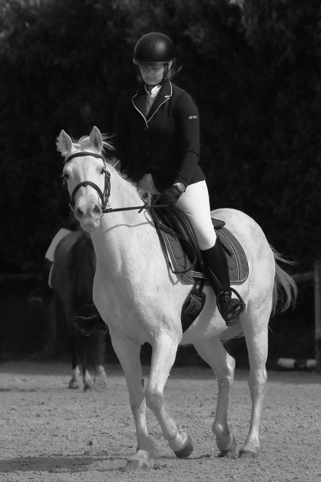

Prestations photographiques équestres
Capturer la complicité entre cavalier et cheval
Je propose des séances photo en décalé, avec un véritable travail de post-traitement. Ma sensibilité artistique, habituellement dédiée à la photographie intime de la nature, est mise au service de votre complicité avec votre cheval.
Mes formules
Essentiel
- 45 à 60 minutes de prise de vue
- 15 à 20 photos retouchées
- 1 tirage 13×18 cm offert
180 €
Signature
- 90 minutes de prise de vue
- 30 à 35 photos retouchées
- 2 tirages 13×18 cm + 1 tirage 20×30 cm offerts
280 €
Jeune Cavalier
- 45 minutes de prise de vue
- 12 photos retouchées
- 1 tirage 13×18 cm offert
130 €
Photo à l’unité
Une belle photo de votre choix, soigneusement retouchée
35 €
(tirage 13×18 cm inclus)
Dernières complicités
Quelques exemples de séances réalisées récemment



Comment ça se passe ?
Nous convenons ensemble d’un créneau en décalé sur votre lieu de pratique. Après la séance, je sélectionne et retravaille les meilleures images avec soin. Vous recevez ensuite une galerie privée pour faire votre choix.